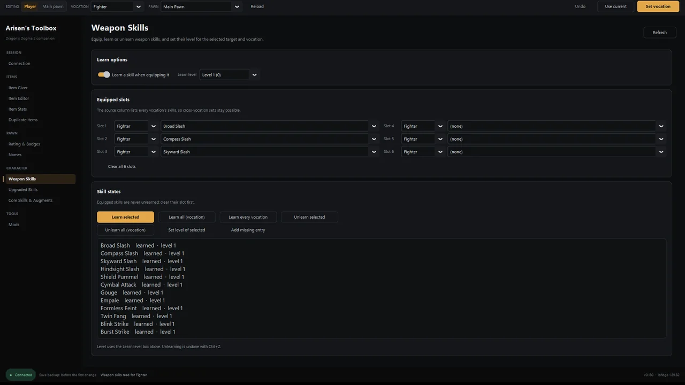
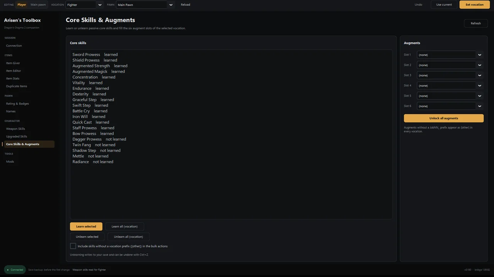
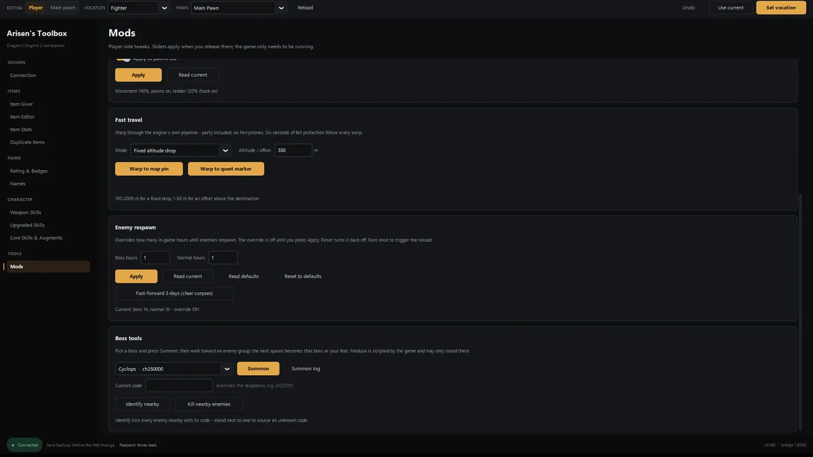

Item giver and item editor
Search the full item library, give items to inventory or storage, edit weapon skills, appraisal, element and custom names, and duplicate a stack.
Dragon's Dogma 2 item editorDragon's Dogma 2 · PC / Steam
Give items, edit gear and stats, learn or unlearn skills, edit pawns, summon bosses, change movement and fast travel, and use the matching Cheat Engine table. Windows 10/11, free, with automatic save backups.

Everything runs from one window, with a shared Player / Main pawn target and vocation selector.
Search the full item library, give items to inventory or storage, edit weapon skills, appraisal, element and custom names, and duplicate a stack.
Dragon's Dogma 2 item editorLearn or unlearn weapon and core skills, set skill levels, fill augment slots and write ExSkills into the equipped weapon.
Skill editor guideEdit thumbs-up and hearts, set badge progress, and rename the Arisen, main pawn and hired pawns.
Pawn editing notesSummon a chosen boss or monster near an enemy group, with a count for testing. The game still owns spawning and bookkeeping.
Summon tool guideAdjust jump height and air time, disable fall damage, change movement and ladder speed, warp to a map pin or quest marker, and shorten respawn timers.
Movement and travel notesThe release folder includes a separate Cheat Engine table with the same bridge and many of the same tools for people who prefer CE.
Dragon's Dogma 2 cheat tableArisen's Toolbox does not scan memory or use AOB patterns. It installs a small
REFramework Lua script and exchanges plain text files with the game in
reframework/data/ddbridge/. Game title updates are less likely to break
a file protocol than a hard-coded memory address.
The app installs REFramework when it is missing, installs or updates the bridge, launches the game through Steam and connects when a save is loaded. The first save change in a session triggers an automatic backup.
Bulk data such as the item list and enum tables travels through sidecar files and is cached locally. After one successful load, the Item Giver can list items without the game running.

ArisensToolbox.exe and press Start on the Connection screen.Running from source needs Python 3.10+ and CustomTkinter. The release exe is the recommended route for most players.
All screens use the same dark interface and follow the Player / pawn / vocation selection.


The release also includes a Cheat Engine table for players who prefer CE. It embeds the same game-side bridge and exposes pawn rating and badges, player tools, weapon and core skills, item giver and editor, duplicate, names, and the movement, travel and boss tools.
Use Cheat Engine 7.x, attach it to DD2.exe, then tick the panel entry and
press Connect. The table can install or update the bridge from the Connect tab.
Short answers. The full FAQ covers saves, mods, updates and troubleshooting.
It edits the loaded save in a single-player game. The app backs up the save before the first change of a session, keeps ten recent backups plus a pinned first backup, and records undo for most edits. Back up your own save as well; any save editor carries risk.
It is a companion and save editor, not a memory scanner. It talks to a REFramework Lua script and changes game state through the game's own classes. That covers trainer-like edits: items, stats, skills, pawns, movement, fast travel and summons.
The app connects to the game on your PC through local files in the REFramework data folder. It does not need an online account. The item list is cached after one successful load, so the Item Giver can still show items offline.
The file-based bridge is designed to survive game title updates, but REFramework itself and class fields can change. If something stops resolving, update REFramework and the bundled bridge from the Connection screen, then check the release notes.
It works alongside REFramework mods. Load-order and script conflicts are possible with mods that patch the same game classes, so test on a backed-up save.
Download the latest build, or read the install guide first. Back up your save either way.